Welcome to the Whimsy Dice Corner! (˶ᵔᗜᵔ˶)ﾉﾞ
Your one-stop-shop for that inner dragon, longing to hoard colourful, hand-made, sparkly dice to match with whatever fantastical world you and your party are building! Stay for as long as you like and browse through a wide selection of designs from our all-Canadian partners who share a common passion for TTRPG.
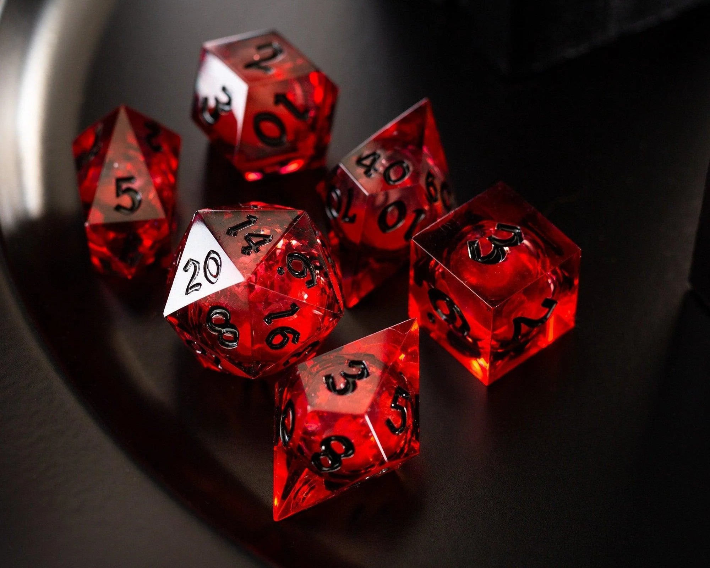
Blood Red Liquid Core Dice
$85.00 CAD
by: Runic Wizard
Liquid core of blood red, perfect for the strong personalities that crave a little bit of that raw depth in humanity, because what else makes you feel more alive than a beautiful flow of red swirling in its casing?
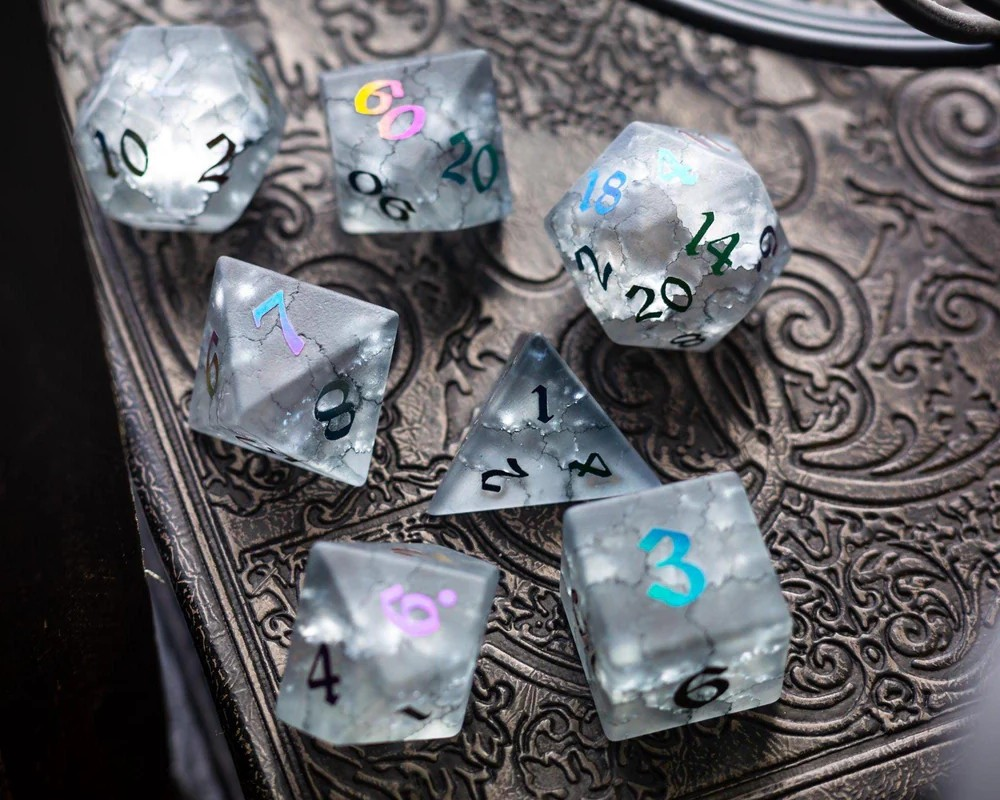
Lighting in a Bottle Glass Dice
$132.00 CAD
by: Cathy Meadows
Marble-like cracks encased in opaque glass resembling a storm brewing within, and if you look hard enough, perhaps you might be able to divine something out of it. Who knows... maybe you will even be able to summon a storm upon rolling a natural 20!
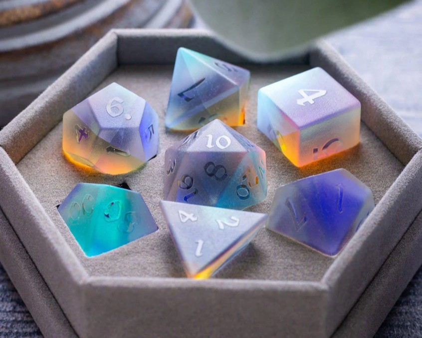
Opalite Glass Dice
$150.00 CAD
by: Cathy Meadows
Simple and elegant holographic properties of the glass gives you the feeling of holding an opal stone in your palms. Quiet yet stricking is everything this set is, with the numbers not coloured, but rather polished to shine.
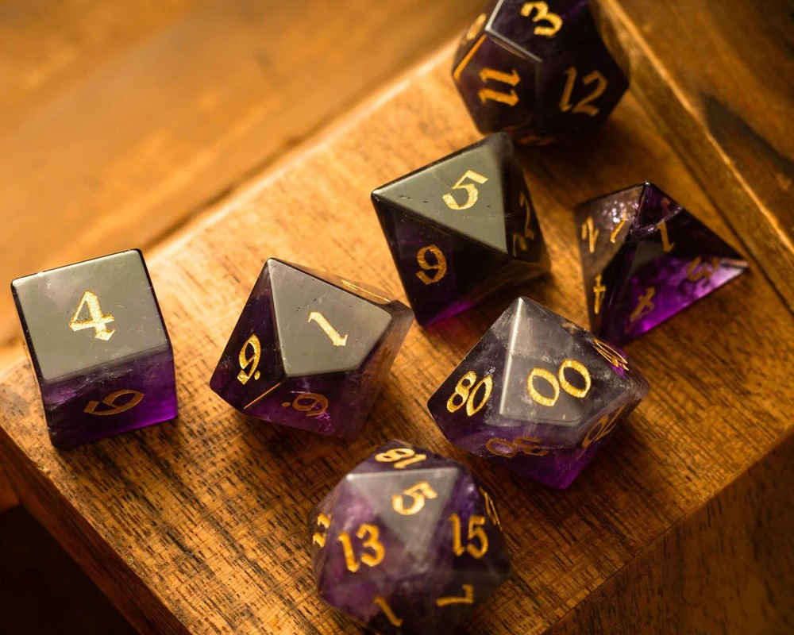
Mystical Purple Amethyst Dice
$120.00 CAD
by: Kaztical
Purple and golden - the royal combination that can never go wrong. Carved from genuine amethyst, the natural hues of violet dance within these stones and seem to be frozen in time like a royal gala preserved in a memory, its colours dancing perpetually.
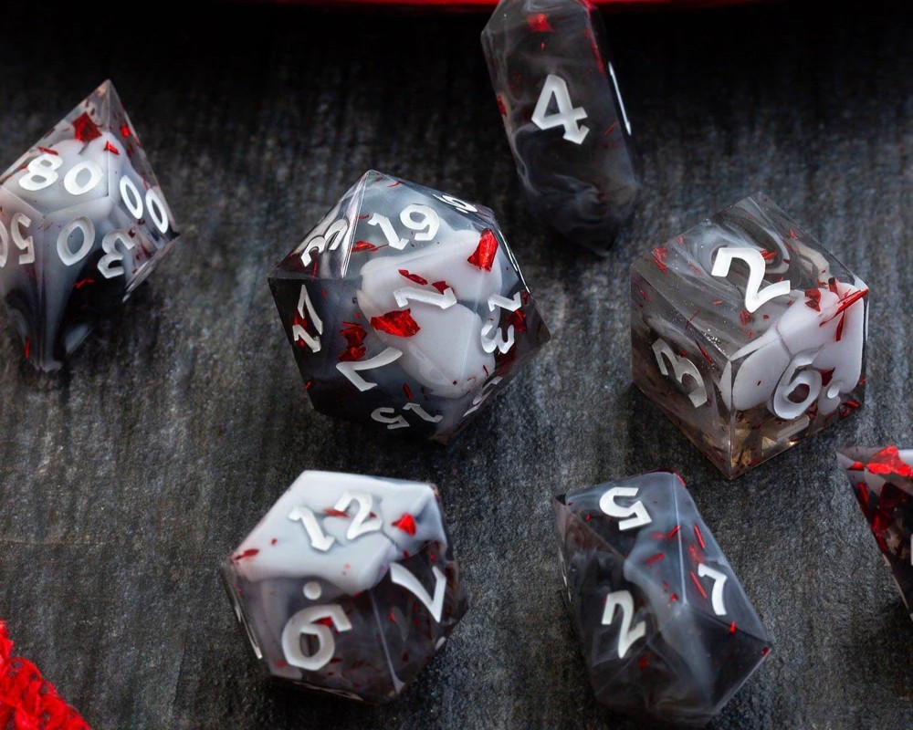
Vampire's Visit Resin Dice
$75.00 CAD
by: Anna Greenblume
Smokes of black and grey swirl within like a sinister dream, spotted with specks of striking red as if something forbidden had taken place. Had it hurt? Or had passion dominated the encounter...? Let the dice speak for you...
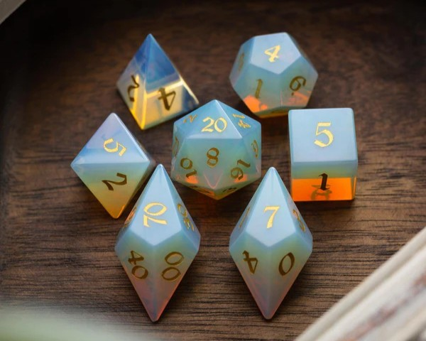
A Syren's Tears Gemstone Dice
$100.00 CAD
by: Mystic Mage
Resembling of pearls from the ocean, this dice set carved from gemstones is cool to the touch and accented with gold numberings.
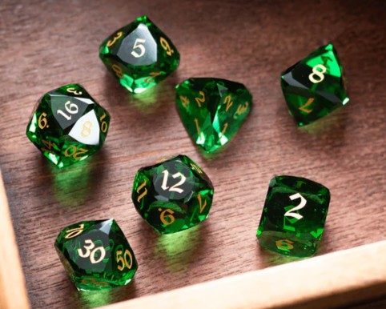
Dragon's Eye Glass Dice
$97.00 CAD
by: Mystic Mage
Angular and majestic glass cuts resemble a dragon's hoard, with a stricking green to match its eyes, complete with gold numberings so drive home the majesty held within this set.
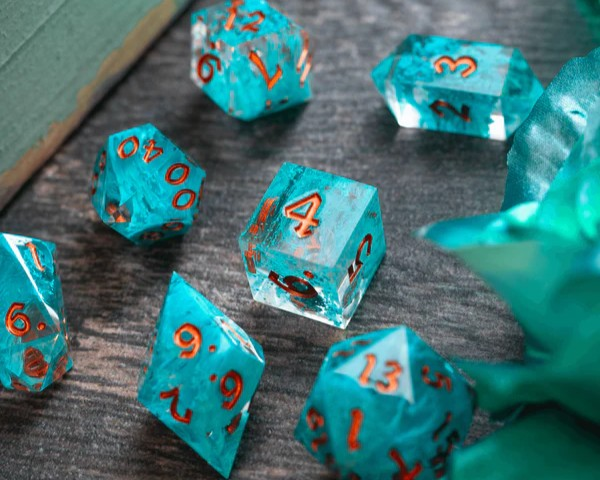
Mage's Turquoise Resin Dice
$85.00 CAD
by: Anna Greenblume
Using the colour schemes of a turquoise gemstone, this set is perfect for mages who wish to make magic with pretty stones. Let the turquoise dice decide your fate!
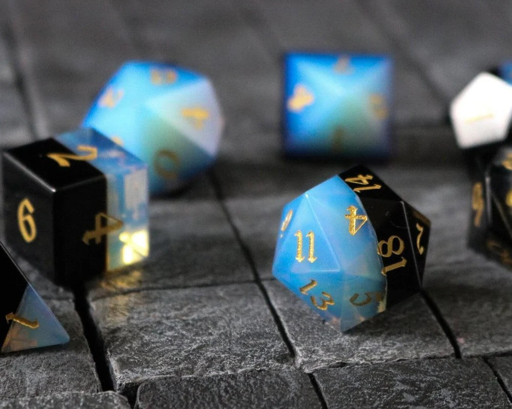
The Duality Gemstone Dice
$105.00 CAD
by: Kaztical
Sometimes light and dark aren't as they seem. After all, they are just two sides of the same coin... right? Carved from two different types of gemstones, this set will either bring home that ever-welcomed natural 20, or put a wrench in your plans with a natural 1. Either way, this is just one way the dice ensure the Yin-Yang balance in the story.
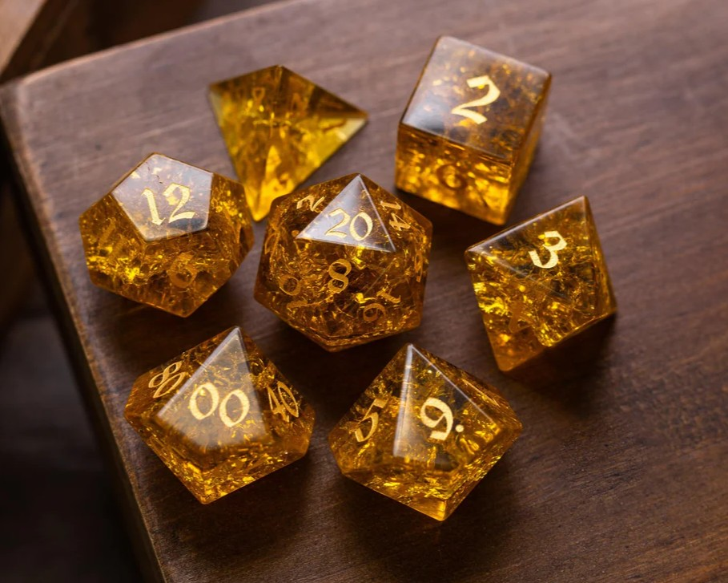
Liquid Gold Glass Dice
$95.00 CAD
by: Runic Wizard
Glass-carved dice of brilliant gold the shade of fresh honey. Don't try tasting it, though, for it may not taste as sweet as it looks!
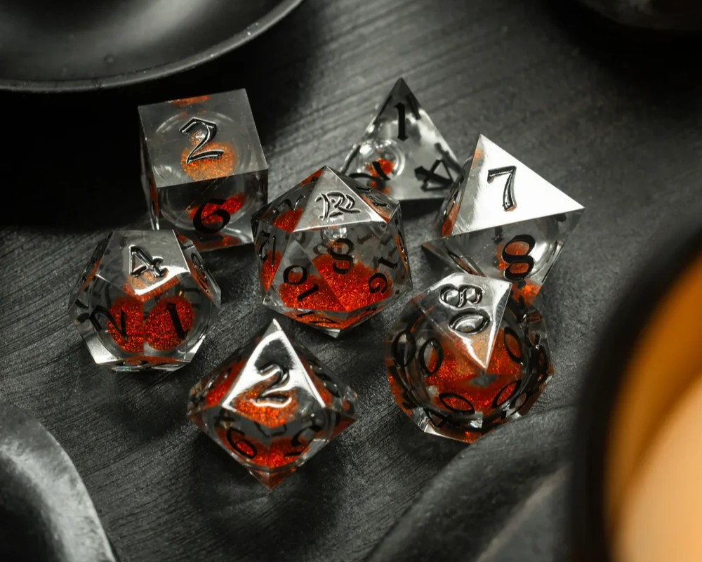
Warlock's Blood Oath Liquid Core Resin Dice
$80.00 CAD
by: Runic Wizard
A pool of orange-red liquid core, encased in smoky resin certainly creates a mystery that is begging to be discovered. What story will these dice tell when you roll them?
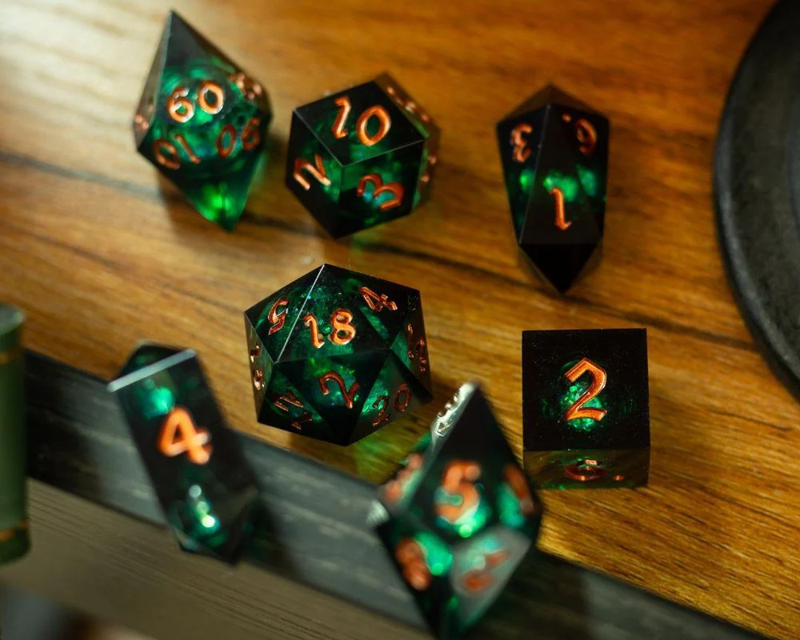
What Lies Within Deep Emerald Liquid Core Dice
$85.00 CAD
by: Kaztical
Perfect for the druid who often finds peace in nature. The deep emarald liquid core resembles the swaying of leaves deep in a forest, shining all hues of green as light reflects all parts differently, like how it does life.
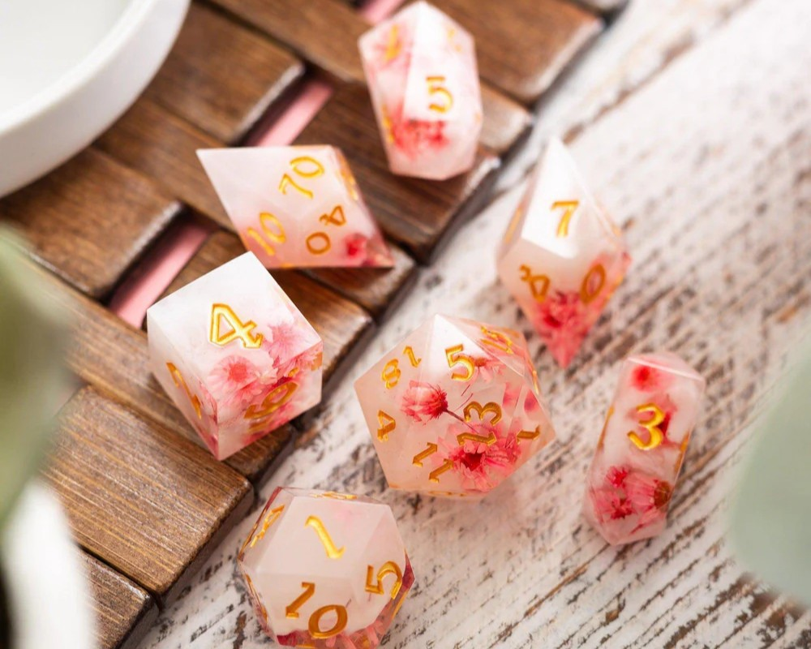
Sakura Bloom Resin Dice
$85.00 CAD
by: Mystic Mage
For the sweet, playful souls who bring light to every room they enter. Soft pink blossoms encased in a cloud of white takes you to a breezy spring day where colour is present all around. Or... maybe it just reminds you of that sakura milk tea you had the other day...?